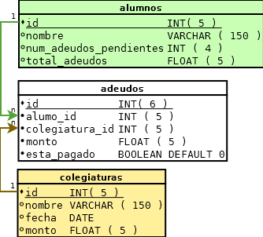

La siguiente referencia es un resumen de la documentación oficial de mysql, quizás usted quiera consultar la fuente original para aclarar algunas dudas:
https://dev.mysql.com/doc/refman/5.0/es/tutorial.html
Sí en cambio si desea descargar la referencia completa de mysql le recomiendo seguir el siguiente enlace:
Para ver una lista de las opciones utilizadas con mysql, ejecútelo con la opción --help:
shell> mysql --help
El siguiente diagrama nos representa una base de datos con tres tablas como se muestra a continuación:
;
Usted puede descargar:
shell> mysql -h host -u user -p
Enter password: ********
mysql> SELECT VERSION(), CURRENT_DATE, NOW(), USER();
SHOW databases;
CREATE DATABASE escuela;
USE escuela;
BD en usoSHOW tables;
CREATE TABLE IF NOT EXISTS `alumnos` (
`id` int(11) NOT NULL AUTO_INCREMENT,
`nombre` varchar(150) NOT NULL,
`numerodeudos_pendientes` int(4) NOT NULL,
`total_adeudos` float NOT NULL,
PRIMARY KEY (`id`)
);
DESCRIBE alumnos;
Supongamos que deseamos agregar un campo nuevo a la tabla alumnos, por ejemplo agregar el campo email para administrar las cuentas de correo electrónico de los alumnos:
ALTER TABLE `alumnos` ADD `email` VARCHAR( 50 ) NOT NULL AFTER `nombre`;
-- Alterando el campo email agregado previamente
ALTER TABLE `alumnos` CHANGE `email` `email` VARCHAR( 200 ) NOT NULL;
INSERT INTO `alumnos`
(`nombre` ,`numerodeudos_pendientes` ,`total_adeudos`)
VALUES ('Adrian Ignacio Coronado Castillo', '0', '0');
La sentencia SELECT es utilizada para traer información desde una tabla. La sintaxis general de esta sentencia es:
SELECT seleccionar_Esto
FROM desde_tabla
WHERE condiciones;
Por ejemplo para seleccionar todos los los registros con todos sus campos de la tabla alumnos seria:
SELECT *
FROM `alumnos`
WHERE 1;
UPDATE modifica solo el registro en cuestión y no requiere que se vuelva a llenar la tabla:
UPDATE alumnos
SET email = 'cyclop28@hotmail.com'
WHERE id = 1;